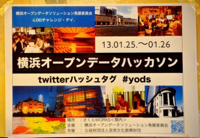
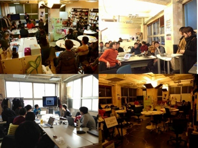
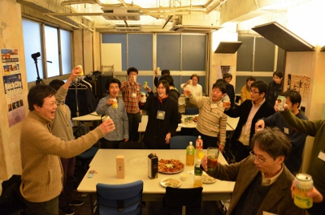

2月, 2013
Linked Open Data チャレンジ Japan 2012 授賞式を3/7に開催
下記の通り「Linked Open Data チャレンジ Japan 2012 授賞式」を、「セマンティックWebコンファレンス2013」内にて開催いたします。応募総数205作品の中から、厳選な審査を経て選考された作品に各賞を贈ります。どの作品も個性的で素晴らしく、審査会は最後まで意見がもつれました。受賞作品は当日会場で発表いたします。
セマンティックWebコンファレンスは、セマンティックWeb委員会が、セマンティックWeb技術やオントロジー、Linked Open Data の普及に向けて、2001年より毎年開催しているイベントです。今年は、オープンデータに関連した様々な取り組みを紹介する講演やデモ展示、来たるオープンデータ社会に向けて議論を行うパネル討論など、盛り沢山の内容となっております。なお、座席には限りがございますので、事前登録をお願いいたします。定員に達した場合はご容赦ください。皆さまのご参加を心よりお待ちしております。
- 名称:
セマンティックWebコンファレンス2013
～ようこそLOD大陸へ つながるオープンデータ～
- 開催日時:
2013年3月7日(木) 9:30－18:00 (受付開始 9:00)
- 会場:
慶應義塾大学 三田キャンパス 北館ホール
東京都港区三田2-15-45
http://www.keio.ac.jp/ja/access/mita.html
- 主催:
慶應義塾大学 SFC研究所
- 事務局:
慶應義塾大学 環境情報学部 萩野研究室
- 参加費:
無料
- 詳細，申込:
http://s-web.sfc.keio.ac.jp/conference2013/
- プログラム(概要):
9:40－10:20 基調講演 「オープンデータに関する経済産業省の取組」
岡田 武 (経済産業省 商務情報政策局 情報政策課情報プロジェクト室)
10:20－11:00 基調講演 「オープンデータと日本のイノベーション」
高木 聡一郎 (株式会社NTTデータ 企画調整室 IT政策推進グループ)
11:00－11:20 講演 「欧米におけるセマンティック技術の適用動向」
川村 隆浩 (株式会社東芝 研究開発センター)
11:20－12:00 セマンティックWeb委員会活動報告
12:00－13:00 昼食，デモ展示見学
13:00－14:00 LODシステム開発事例の紹介
14:00－15:00 デモ展示見学，ライトニングトーク
15:00－16:30 Linked Open Data チャレンジ Japan 2012 授賞式
16:45－18:00 パネルディスカッション 「オープンデータ社会とセマンティックWeb」
以上。
技術コラム第11回：横浜オープンデータハッカソン −LODチャレンジデー in 横浜−
1/25,26に横浜で，横浜オープンデータソリューション発展委員会が主催のイベント「横浜オープンデータハッカソン −LODチャレンジデー in 横浜−」が開催されました．LODチャレンジは共催という形で協力しました．当日参加された秋元慶太さんと込山悠介さんが参加レポートを寄稿してくださいました。

秋元慶太さん
第一回目の横浜オープンデータハッカソンに両日参加させて頂きました、ARチームの秋元です。
この度、アフターレポートを書く機会を頂きました。
ライトニングトークライクな形式で、一参加者の視点で、書き綴ろうと思います。
■端末の顛末
お気づきになられた方もいるかもしれませんが、
フロッピーディスク用スロットが前面にあるような、
分厚くて古いノートパソコンを持ち込み、開発していました。
実は直前になって、普段使用しているノートパソコンが壊れてしまい、
開発環境の再構築や今日のウェブの快適な表示も、共に、実現できない状況下での参加でした。
そのような急転直下で開発できたのは、大きな経験です。
■即断で夜通しでの参加を決意
横浜オープンデータハッカソンの開催を知ったのは、1月13日に行われた、
「横浜のアートと観光をオープンデータで盛り上げよう！ 横浜オープンデータソリューション発展委員会設立総会 ＆ アイディアミーティング」
の会場です。
ハッカソンへの参加は初めてですが、こんな貴重な機会はそうそうないと思い、
即断で夜通しでの参加を決意しました。
■どのチームも面白い
今回は、知識と経験を最大限活かすために、
ARチームへの参加を希望しましたが、
正直言って全てのチームに関心がありました。
今でもあります。
■過去の自分は現在の自分を助ける
特定のARブラウザに限れば、そのコンテンツの開発経験はそれなりにあったので、
自分の技量と知識で何ができるか、と、
それにかかる時間の想定は速やかにまとまりました。
■徹夜は基本的にしないほうがいい
やっておいて言うのも何ですが、これが前提だと思います。
翌日以降の開発効率と体調の両面を考えれば、
日常の一環として作業するのがおそらく最も望ましいのでしょう。
■退路を絶つことで研ぎ澄まされる
でも、「心意気が荒ぶる時」があります。
閉塞感や停滞感を打破したい時、心を構えて、事物の新境地を垣間見たい時。
残った少数メンバーによる開発現場。一旦、日常から切り離された、異質の空間。
終電は過ぎました。あとは、開発する他にありませんね。
■終電過ぎから始発発車までの、深夜と早朝の関内の様子はいかに
ハッカソンへの参加を決意した時に楽しみにしていたものの一つに、
会場のある、関内の深夜の様子の体験がありました。
日常では終電や就寝時間を意識するため、まず縁のない経験です。
作業に注力したかったので散策する程には至りませんでしたが、
金曜日ということもあってか、午前3時を過ぎても賑やかで、個人的に興味深い見聞でした。
■ここで「あの仕事」が行われていると思うと感慨深い
楽しみにしていたものを更にもう一つご紹介すると、
ヨコハマ経済新聞編集長で、今回のハッカソンの会場スペースを提供された、
横浜コミュニティデザイン・ラボの理事長でもある、
杉浦裕樹さんの深夜のアクティビティを垣間見られたらラッキーだなー、と、思っていました。
前述の新聞記事を始め、杉浦さん個人のソーシャルメディアでの活動は、
私個人の知る限りでは、昼夜を問わず行われています。電話も鳴りっぱなしです。
氏を始め、そんなアクティビストな方々と、活動空間を一部・一時的にでも共有できたのは大変貴重な経験でした。
また、こういう場の定番アイテムの一つである、レッドブルの差し入れもありがとうございました。
■朝日が一番きつい
夜通しの作業で一番大変だったのは、
午前中の日光でした。
目が眩しい！ディスプレイも眩しい！中間発表までのカウントダウンも厳しい！（？）
たまらず会場奥の方へ退避しました。
■チーム内外のメンバーに助けられる
やっぱりこれですね。
技術ノウハウはもとより、コミュニケーション、進行、プレゼン、色々と助けられました。
至福であり、人が輝く最高のひとときです。
■最終発表にて
所属チームが優秀賞を頂きました。嬉しいです！
秋元慶太
Facebook: keita.akimoto.92

みなさん，いい顔していますね．そして，徹夜組も！
込山悠介さん
2013年1月25・26日に関内さくらWORKS（神奈川県横浜市）で開催された横浜オープンデータハッカソンへ参加した際のイベントレポートを報告させていただきます.
このハッカソン（Hackathon = Hack + Marathon：耐久技術開発キャンプの意）は, 横浜市の自治体やNPOが持つデータをオープンデータ（ライセンスを守ることで誰でも自由に二次利用できるウェブ上で公開されているデータ）化し, 芸術・文化などの特定領域からごみ収集など身近な市民生活に役に立つ情報まで, ソフトウェア（データベースやアプリケーション）として週末２日間で実装する技術イベントです. このように書きますとIT技術者以外お断りのような印象を与えてしまいますが, 実際には技術者だけで作業を進めることは不可能です. 例を挙げますとアイデアを提供するプランナー, 使いやすいユーザーインタフェースを考案するデザイナー, 行政データを取り扱う際にライセンス許諾する官公庁職員, 持続的なオープンデータ普及のため活動するためには政治家など幅広い分野の専門家が必要です. 参加者の年齢は大学生から産官学の最前線で活躍する中堅・大御所まで世代間の谷はない印象を受けました.
1月25日（金）
不覚にも関内駅でスマートフォンのバッテリー切れを起こし, 迷いながらの18:30に会場である関内さくらWORKSへ到着. この建物, 雑居ビルの打ちっぱなしコンクリートを活かしたデザインであるため周囲の繁華街に自然と溶け込んでいました（ドラマに登場する探偵事務所のような雰囲気）. 既にオープニング・セッションが始まっていたのですが, それほど広くはない空間に50人近く入って満員に(Wifiのルータを心配する声も). 横浜市に関わる産官学民の人々がオープンデータに強い関心を持っていることがうかがい知れます. セッションではじめに小林さんからはオープンデータの概要とLODの活用について. 関口さんから世界・日本の状況をふまえ横浜にどう適用していくか行政サイドからオープンデータについてのご講演がありました. 自治体情報のオープンデータには以前から興味があったのですが, 業務では触れる機会がなかったので大変参考になりました.
勉強会終了後19:30から, すぐにハッカソンのグループ分けが始まりました. 班分けは事前にアイデアが出ていた『横浜データポータル』『横浜市データ入力支援アプリ（俺の金どこいった？プロジェクト）』『横浜歴史AR』『横浜検定』『横浜ごみ分別LOD』などに応じて行いました. 私は地方自治体がどのようなデータを抱えているのかを知りたかったので『横浜データポータル（データベースカタログ）』を実装するグループに参加いたしました（他の研究課題は横浜市の事情通でないと解決できなさそうだなという判断もありました）. グループではまずディスカッションを行い, 技術系以外の方にもデータ公開のメリットについてお伝えしました. 企業や行政・政治に関わるメンバーはデータプロバイダーとして, アカデミックのメンバーはデータサイエンスへのオープンデータの利用, あるいはその支援技術の開発を目的に参加されていたと思います. 初日のみの参加者が翌朝のLODセミナーに参加できないこともあり, LODのコンセプトを熱っぽくお伝えする場面もありました.
次に横浜データポータルを実現するためにどうするかの手法を洗い出しました. データカタログシステムCKANの日本語化をされた加藤さんがグループにいらっしゃったこともあり, 世界各国でも運用されていることから本ハッカソンではこれを採用しました. 稼働中のシステムに新たに横浜市の切り口を作り, いくつかのレコードを入力して初日は22:00ごろ解散となりました.
その後, 残った二人で何ができそうか再度作戦会議を行い, 「横浜市統計書をリソースとしてカタログに登録しよう」と決定. 加藤さんがCKAN APIに流しこむスクリプトをpythonで, 私がWebサイトから必要な情報を抜き出し, プログラムに取り込みやすい表形式に直す作業をrubyで行いました. 大まかに成功への流れが見えたところで解散. 食事がまだだった私は徹夜組＆オーガナイザーと関内近辺のバーへ, ここでも自治体のオープンデータを進めていくための議論が盛り上がりました. 「横浜市だから先進的な人が集まり先進的な取り組みができるのか？保守的な地方ではどうオープンデータ化を進めるべきだろう？」など新たな疑問もわきました.
26:00ごろハッカソン会場に戻り実装を再開, 『予算書データ入力支援アプリ』『歴史AR』チームも頑張ってらっしゃいました. この時間帯は各グループの技術情報の交換が盛んに行われました, 他チームのバックエンド, フロントエンドの要素技術を教わり, 私の拙いSPARQLの構文をお伝えしたりしていました. 日が昇った29:00ころ徹夜組で朝食の買い出しと外の空気を吸いにコンビニへいき, おにぎり片手にデータのスクレイピングが完了. グループリーダだった加藤さんにデータをメールで投げてバトンタッチ. 31:30ごろ会場の椅子を並べて床につきました・・・
1月26日（土）
7:30, そこへ加藤さんが午前中のLODセミナーの資料を作るため来られました. 11:30からの中間報告に向けた資料作成もしていただき大変恐縮に思いながら, 真横で仮眠しておりました. 10:00過ぎに呼び出した後輩がさくらWORKSに到着したのでLOD勉強会を受講していただきました. 少しずつですが大学研究室でもLODを編纂・運用するための教育を実施しており, その一環でもあります.
11:30からハッカソンの中間報告がありました（2日目の午前中に中間報告を要求されるハッカソンは, 過去のどのハッカソンよりキツいと感じました）. 我々の『横浜データポータル』グループでは前夜に実装したデータベースカタログと編纂したデータテーブルおよびAPI経由で入力するためのスクリプトを加藤さんが代表として発表して下さいました.
二日目からの参加者を交えて12:15から再度グループに割り振りを行い, 協力してくれる後輩をゲット. 夕方のラップアップまでに達成できそうな３つめの小目標を「横浜市消防局のハザードマップのデータリソースをデータポータルに登録」に再設定し作業を進めました. 最終的には二十数件のデータセットをリソース付きで登録することができました. 17:00から最終発表では『横浜データポータル』を実装し, 実例として横浜統計書、ハザードマップを登録したことについて加藤さんから報告. 質疑応答では「Q. オープンデータを利用する上で行政が果たす役割はあるか？ A. エンジニアや研究者が扱いやすいように, データに適切なライセンスを与え公開することが最も重要である.」といった質疑応答がなされました. 優勝グループを決定する投票で, 我々のチームは0票と残念な結果になってしまいましたが, すぐに使えるデータカタログを地味に整備できてよかったと思います（LOD化の作業を進める上で使えるデータを探す労力は想像より大きいです, 誰かがデータを発見しやすく整理し, 扱いやすくきれいな形に編纂することは大切です）.
17:30, 優勝グループ選出の投票では『横浜歴史AR』グループと『データ入力支援アプリ』グループがまさかの同票を集め決選投票に. 僅差を制したのは『横浜歴史AR』グループ, スマートフォン向けのARブラウザーjunaioを使って, DBpedia Japaneseから作成したデータを表示するというアプリを作成したという功績でした. 徹夜でARの開発・テストをされていた結果が実ったようでした. リーダーの支持も適切でチーム内の連携がうまく機能しているように見えました. 懇親会では私にとって馴染みのないAndroidの技術について, 直接日本Androidの会のメンバーから話しが聞け, 今後のセマンティックウェブ技術やデータベース, ウェブアプリケーションの開発の方向性について考える機会となりました.
このエントリーはLODチャレンジ2012の応募締め切り当日（2013/01/31）に書いていますが, 合計で170件を超える作品応募が確認できます. これは昨年度の倍以上の件数ですので, 2012年度にオープンデータの思想がいかに普及したかが分かります. 以前は周囲から好奇の目で「何のためにやるのか？やる意味があるのか？」とばかり言われていましたが, ようやく「どうやればいいのか？誰にきけばわかるのか？」と聞かれる段階に入ったと思います. 国策でLODを推進することはもちろん大切ですが, 市民生活に対応したツールを柔軟に作りあげていくのは個人や小グループでもできるということを横浜オープンデータハッカソンでは学びました. 今後も一個人として微力ながらLODの発展に貢献していきたいと思います.
込山悠介

お疲れさまでした．
秋元慶太さん，込山悠介さん，詳細なレポートをありがとうございました。
Linked Dataの翻訳本が出版されました
「Linked Data －Webをグローバルなデータ空間にする仕組み」という翻訳本が，本日2/4に近代科学社から出版されました．Linked Dataの分野の第一人者である Tom Heath 氏と Cris Bizer 氏が執筆した原著を，リンクト・オープン・データ・イニシアティブのメンバーが中心となって日本語に翻訳されたものです．Linked Dataに関する基本的な考え方が丁寧に解説されており，バイブル的な本です．これから Linked Data を始める方の入門書として，すでにLinked Dataに取り組んでいる方の振り返り教材として，ぴったりの書籍です．